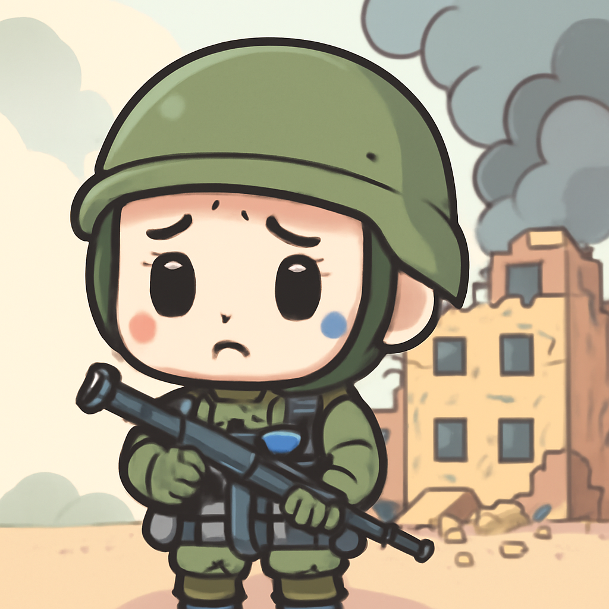
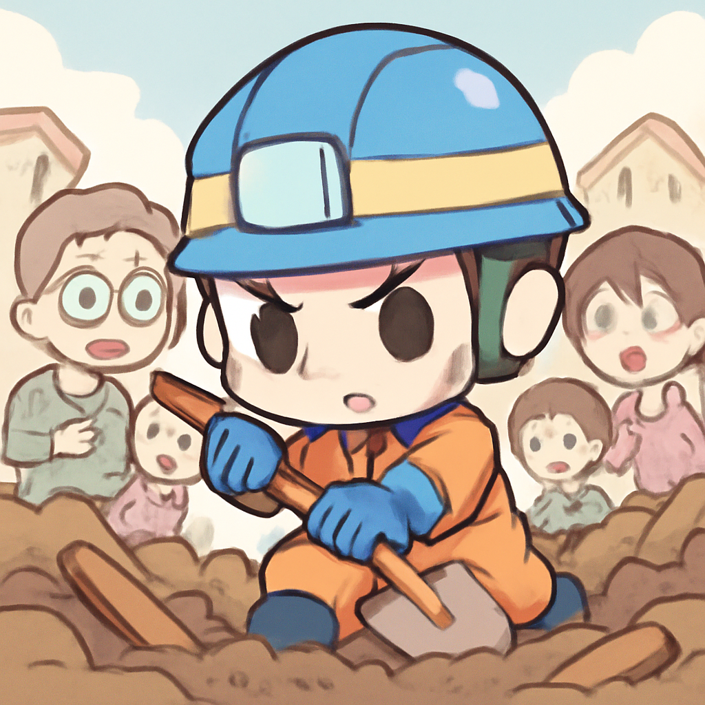
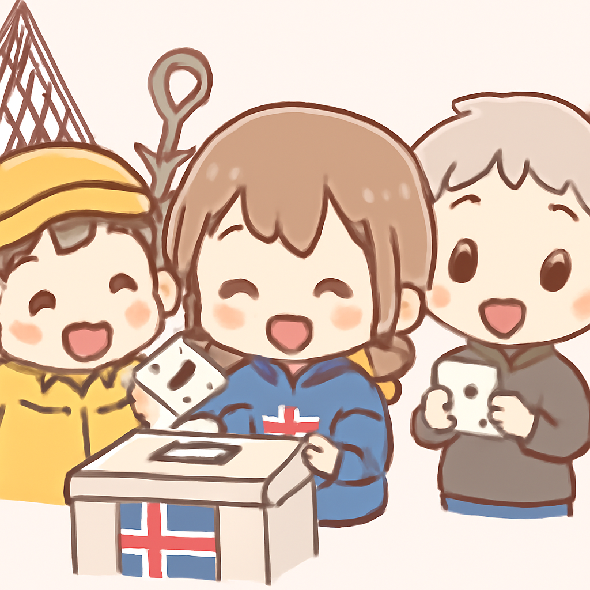

其一 · 烏克蘭基輔 · 武器庫遭襲致37人喪生
基輔一武器庫遭襲，37人不幸遇難。

在烏克蘭基輔，最近一場襲擊讓37人喪生，這個武器庫顯然設在民居附近，讓人不禁懷疑當地的安全規範。烏克蘭總統澤倫斯基也表示這樣的設置“根本不應該存在”。這不僅是一場悲劇，也讓人對烏克蘭的軍事存儲安全感到擔憂。希望未來能有更好的防範措施，讓人不再擔心“家裡的武器庫”問題。
🔗 原始新聞 ↗
2026-08-30 · 以古觀今，以笑抗愁
基輔一武器庫遭襲，37人不幸遇難。

在烏克蘭基輔，最近一場襲擊讓37人喪生，這個武器庫顯然設在民居附近，讓人不禁懷疑當地的安全規範。烏克蘭總統澤倫斯基也表示這樣的設置“根本不應該存在”。這不僅是一場悲劇，也讓人對烏克蘭的軍事存儲安全感到擔憂。希望未來能有更好的防範措施，讓人不再擔心“家裡的武器庫”問題。
🔗 原始新聞 ↗
尼泊爾洪水災後，2400人仍未找到。

尼泊爾的洪水災害持續影響著當地，至今已有2400人失蹤，救援工作進入第四天。這場災難不僅帶來了巨大的損失，還讓人深刻體會到自然災害的無情。救援隊伍正在全力以赴，希望能早日找到失踪者，讓家庭重聚。這種情況，真的讓人不禁想希望能有好天氣，讓人們能夠安心生活。
🔗 原始新聞 ↗
荷蘭發出紅色警報，警告特朗普形狀的藥丸。
荷蘭的健康機構最近對一種特朗普形狀的迷幻藥發出紅色警報，因為這種藥物具有延遲的效果，可能增加過量的風險。這真是時代的奇妙結合，怎麼會有人想到用總統的形象做迷幻藥呢？希望大家都能保持理智，不要讓這些藥物成為聚會的主角。
🔗 原始新聞 ↗
安哥拉前總統因貪污被判刑，政治震撼。
安哥拉前總統莫雷諾因貪污罪被判入獄，這位曾任期內的領導人否認從中國企業收取賄賂。這不僅影響了他個人的名譽，也讓不少政界人士心生警惕，畢竟貪污問題在許多國家都是個老大難的話題。希望這個事件能讓更多政治人物警醒，貪污不是小事。
🔗 原始新聞 ↗
冰島公投決定是否重啟加入歐盟的談判。

冰島近日舉行公投，決定是否重啟與歐盟的加入談判。由於國際局勢不斷變化，這次投票引起了廣泛關注，尤其是對於冰島的重要漁業產業的影響。無論結果如何，這都將成為冰島未來政策的一個重要轉折點。希望冰島能找到最佳的未來之路，無論是與歐盟還是獨立發展。
🔗 原始新聞 ↗